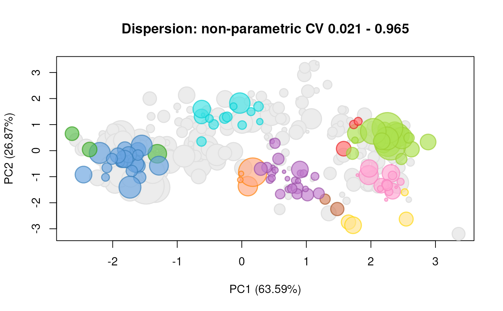

MSnSetaverageMSnSet.RdGiven a list of MSnSet instances, typically representing
replicated experiments, the function returns an average
MSnSet.
averageMSnSet(x, avg = function(x) mean(x, na.rm = TRUE), disp = npcv)
| x | A |
|---|---|
| avg | The averaging function. Default is the mean after
removing missing values, as computed by |
| disp | The disperion function. Default is an non-parametric
coefficient of variation that replaces the standard deviation by
the median absolute deviation as computed by
|
A new average MSnSet.
This function is aimed at facilitating the visualisation of replicated experiments and should not be used as a replacement for a statistical analysis.
The samples of the instances to be averaged must be identical but
can be in a different order (they will be reordered by
default). The features names of the result will correspond to the
union of the feature names of the input MSnSet
instances. Each average value will be computed by the avg
function and the dispersion of the replicated measurements will be
estimated by the disp function. These dispersions will be
stored as a data.frame in the feature metadata that can be
accessed with fData(.)$disp. Similarly, the number of
missing values that were present when average (and dispersion)
were computed are available in fData(.)$disp.
Currently, the feature metadata of the returned object corresponds
the the feature metadata of the first object in the list
(augmented with the missing value and dispersion values); the
metadata of the features that were missing in this first input are
missing (i.e. populated with NAs). This may change in the
future.
compfnames to compare MSnSet feature names.
library("pRolocdata") ## 3 replicates from Tan et al. 2009 data(tan2009r1) data(tan2009r2) data(tan2009r3) x <- MSnSetList(list(tan2009r1, tan2009r2, tan2009r3)) avg <- averageMSnSet(x) dim(avg)#> [1] 1311 4#> X114 X115 X116 X117 #> P20353 0.3605000 0.3035000 0.2095000 0.1265000 #> P53501 0.4299090 0.1779700 0.2068280 0.1852625 #> Q7KU78 0.1704443 0.1234443 0.1772223 0.5290000 #> P04412 0.2567500 0.2210000 0.3015000 0.2205000 #> Q7KJ73 0.2160000 0.1830000 0.3420000 0.2590000 #> Q7JZN0 0.0965000 0.2509443 0.4771667 0.1750557#> X114 X115 X116 X117 #> P20353 1 1 1 1 #> P53501 1 1 1 1 #> Q7KU78 0 0 0 0 #> P04412 1 1 1 1 #> Q7KJ73 2 2 2 2 #> Q7JZN0 0 0 0 0#> X114 X115 X116 X117 #> P20353 0.076083495 0.1099127 0.109691169 0.14650198 #> P53501 0.034172542 0.2640556 0.005139653 0.17104568 #> Q7KU78 0.023198743 0.4483795 0.027883087 0.04764499 #> P04412 0.053414021 0.2146751 0.090972139 0.27903810 #> Q7KJ73 0.000000000 0.0000000 0.000000000 0.00000000 #> Q7JZN0 0.007681865 0.1959534 0.097873350 0.06210542## using the standard deviation as measure of dispersion avg2 <-averageMSnSet(x, disp = sd) head(fData(avg2)$disp)#> X114 X115 X116 X117 #> P20353 NA NA NA NA #> P53501 NA NA NA NA #> Q7KU78 0.03158988 0.04750696 0.01033500 0.04667976 #> P04412 NA NA NA NA #> Q7KJ73 NA NA NA NA #> Q7JZN0 0.02121910 0.04160155 0.08447534 0.04988318## keep only complete observations, i.e proteins ## that had 0 missing values for all samples sel <- apply(fData(avg)$nNA, 1 , function(x) all(x == 0)) avg <- avg[sel, ] disp <- rowMax(fData(avg)$disp) library("pRoloc")#>#>#>#>#> #>#> #> #>#>#> Warning: replacing previous import ‘BiocGenerics::type’ by ‘kernlab::type’ when loading ‘pRoloc’#> Warning: replacing previous import ‘mclust::dmvnorm’ by ‘mvtnorm::dmvnorm’ when loading ‘pRoloc’#> #> #>title(main = paste("Dispersion: non-parametric CV", paste(round(range(disp), 3), collapse = " - ")))